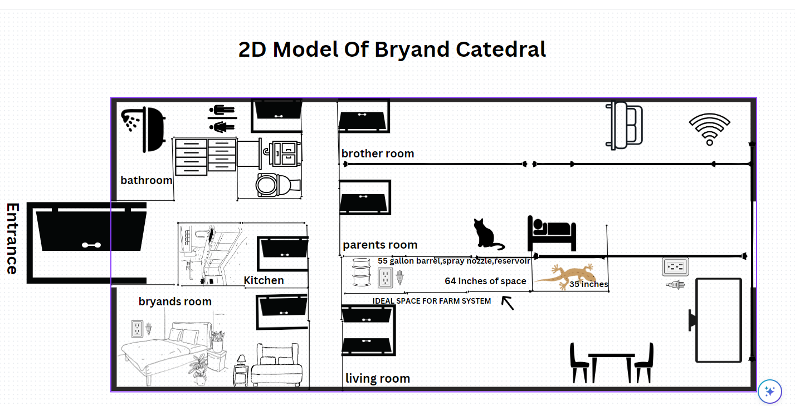
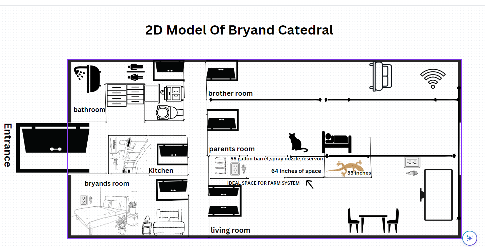

What is the purpose of this report?
The purpose of this report is to create and desgin step by step,my own home farm system.This report is how to conduct my data and my research, it is also a guide for a beginningers to read and understand how i created the home farm system and what things that i did to create a working home farm system steps did i take to do it.
What Problem Is Being Addressed?
The problem that is being addressed is how can we grow our own food at home, and the shortage of plants and vegetables that is happening globally due to global warming.The temperature getting hotter is affecting the way we grow our plants.According to article it states "In the U.S., recent snow and ice storms that snared traffic for hours along the East Coast also hampered food deliveries bound for grocery stores and distribution hubs. Those delays rippled across the country, delaying shipment on fruit and vegetables with a limited shelf life while growers with perishable produce are forced to pay inflated shipping rates to attract limited trucking supplies"This infortmation shows that in the world there are many issues that we cannot predict and that it is getting worse.
What Is the context or background Of The Report?/ What Prompted This Report?
The context of this report is to create and explain in detail my home farm system, and what prompted this report and how did i gather all the information to create and desgin my own home farm system.The first things you will need is desinging such as a 2d and 3d model of your system, and then what youll need next is the materials as well as the crop that you want to grow.
What Is The Problem?
The problem is how do we create our home farm system at home and how to we combat the problem of shortage of vegtables all around the world.I believe the problem is we have to much issues going on with global warming and how it is affecting our ecosystem and how we gain access to our plants and fresh vegetables all over the world.
Project Timeline
The Project Timeline is from April 29,2023 to June 23
Project Budget
The project budget i will have for the farm system is currently 500$ and a extra 100$ for the materials that i need
Your Needs Assessment

Farm Planning

What factors should be considered in developing a recommendation?
Factors that should be considered in developing a recommendation is to listen to the feedback that you receive also you have to,develop a recommendation.It's important because listening to the pros and cons can help you alot into making a recommendation a example can be like changing the growth tent to match the home farm system or finding another crop that can grow in your home.
What Recommendations Are You Making?
The recommendations I am making are moving the home farm system to a bigger space like my living room bc it has 55 inches of free space.I made sure that I have easy access to the outlets and making sure i have filetered water and a spray nozzle as well as a drain line.The reasons i am making these recommedations is because i have to change how i will set it up because of hazards and things that can happen as well as do i need these things for my home farm system.
How will you support your recommendations in your report?
The way i will support my recommedations in my report is by using the feedback i recieve from my instructor and maing sure that i am using the right tools.To help maintain and grow the home grown farm system.Also i plan to distrubute the plants that i make i believe if i can reach as people as possible it can be more helpful.
- Project Analysis
What Are The Contributing Factors To The Problem Being Faced?
The factors to the problems being faced is the lack of attention the home farm system will be getting and the possible hazards that it could face to my pets if i am not handling the right equipment and it will be difficult to maintain a system is a small amount of time and also not being around it all of the time.
Identify Strengths And Weaknesses Of Location
The strengths of my location is that it has wifi and there are water sources and outlet nearby at all times,The weaknesses are the lack of attention it might get from me not being around it all of the time and the hazard of possible chemicals to my cat or possible relative turning off system.
| Item | Quantity | Total Price |
|---|---|---|
| 55 Gal. Blue Industrial Plastic Drum | 1 | 64$ |
| Seeds Potatos | 1 | 21$ |
| CozyCabin Outdoor Misting Cooling System | 1 | 43$ |
| GROW1 Collapsible Reservoir Water Tank 13 | 1 | 62$ | WY CN LED P1000 Upgraded Full Spectrum | 1 | 49$ | Grodan Rockwool Starter Mini-Blocks | 1 | 11$ |
 
